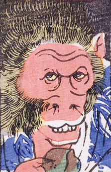

着物を身につけた猿。手に何か持っている。鼻毛が飛び出ている。
著作者：一恵斎芳幾（歌川芳幾）／出典：親書誌：U426_nichibunken_0142：新板化物づくし；シンパンバケモノヅクシ／日付：2009／資源識別子：U426_nichibunken_0142_0013_0000
Copyright (c)2010- International Research Center for Japanese Studies, Kyoto, Japan. All rights reserved.